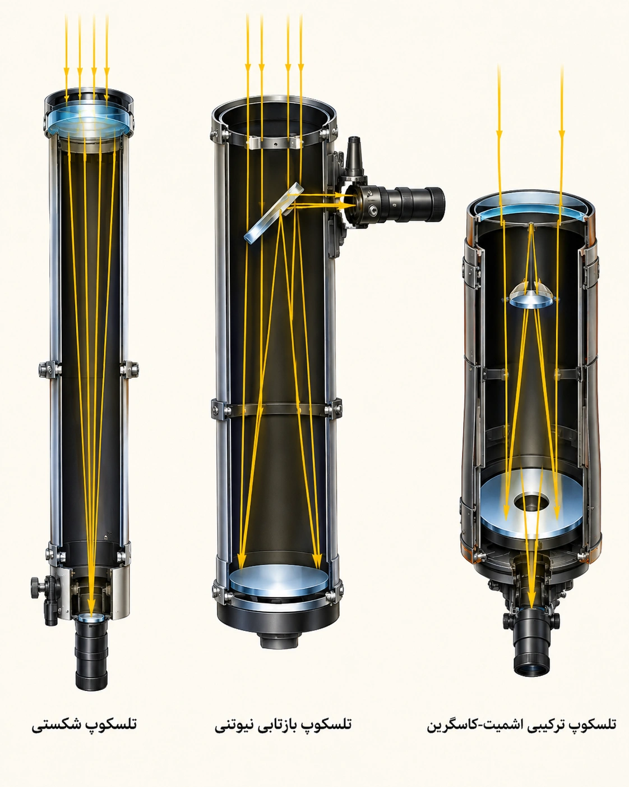

سه طراحی اصلی تلسکوپ را بشناسید، مسیر نور در هرکدام را دنبال کنید و ببینید برای شیوهی رصد و شرایط شما کدام انتخاب مناسبتری است.
تلسکوپ برای دیدن اجرام آسمانی باید نور آنها را جمع کند و به تصویر تبدیل کند. برای این کار، بعضی تلسکوپها از لنز استفاده میکنند، بعضی از آینه و بعضی هم ترکیبی از هر دو را به کار میبرند. به همین دلیل سه خانوادهی اصلی داریم:
نور از یک یا چند لنز در جلوی لوله عبور میکند و در انتهای مسیر به تصویر میرسد؛ شبیه یک دوربین دوچشمی کوچک.
آینهی خمیدهی اصلی نور را جمع میکند. در نوع رایج نیوتنی، آینهی کوچکتری نور را به چشمی کنار لوله میفرستد.
از لنز و آینه با هم استفاده میکند و مسیر نور را داخل لوله تا میزند؛ بنابراین لوله میتواند کوتاهتر از فاصلهی کانونی دستگاه باشد.
در تلسکوپ شکستی نور از لنز عبور میکند؛ در بازتابی مسیر نور با آینه تغییر جهت میدهد. این تشبیه فقط برای تصور تفاوت اولیه است و مسیر واقعی نور در هر طراحی جزئیات بیشتری دارد.
یک مثال عددی: دهانهی یک تلسکوپ شکستی ۷۰ میلیمتر و دهانهی یک بازتابی ۱۱۴ میلیمتر است. نسبت مساحت دهانهها برابر است با (۱۱۴ ÷ ۷۰)²؛ یعنی بازتابی در حالت ایدهآل حدود ۲٫۶۵ برابر نور بیشتری دریافت میکند. در عمل، بازده پوشش آینهها و مانع مرکزی هم اثر میگذارند؛ پس این عدد بهتنهایی روشنایی نهایی تصویر را پیشبینی نمیکند.
هنگام بررسی تلسکوپها معمولاً با سه نام روبهرو میشوید: شکستی، بازتابی و ترکیبی. این نامها به طراحی اپتیکی دستگاه اشاره دارند؛ یعنی نور با لنز، آینه یا ترکیبی از آنها چگونه جمع و متمرکز میشود. در این مقاله سازوکار، مزایا و محدودیتهای هر خانواده را بررسی میکنیم.

نوع اپتیکی تلسکوپ را با «مقر» آن اشتباه نگیرید. نوع اپتیکی به لنزها و آینهها مربوط است؛ مقر پایهای است که تلسکوپ روی آن قرار میگیرد و جهتگیری و دنبالکردن اجرام را ممکن میکند. دابسونی نمونهی خوبی برای فهم این تفاوت است.
در تلسکوپ شکستی، عدسیِ شیئی در جلوی لوله نور ورودی را میشکند و آن را در صفحهی کانونی متمرکز میکند. چشمی در انتهای مسیر، تصویر ساختهشده را برای چشم بزرگنمایی میکند.
آکروماتیک و آپوکروماتیک چه فرقی دارند؟ عدسی آکروماتیک با ترکیب چند عدسی، خطای رنگی را کاهش میدهد اما معمولاً آن را کاملاً حذف نمیکند. طراحی آپوکروماتیک با شیشهها و آرایش اپتیکی پیشرفتهتر، رنگها را بهتر روی هم متمرکز میکند؛ این اصلاح معمولاً هزینهی بیشتری دارد. بنابراین «شکستی» بهتنهایی نمیگوید میزان خطای رنگی چقدر است.
بازتابیها برای جمعکردن و متمرکزکردن نور از آینه استفاده میکنند. یکی از رایجترین نمونهها، طراحی نیوتنی است: آینهی اصلیِ خمیده در انتهای لوله نور را به سمت جلوی لوله بازمیتاباند. آینهی ثانویهی کوچک و مورب، مسیر نور را به کنار لوله و چشمی هدایت میکند.
دابسونی معمولاً یک تلسکوپ بازتابی نیوتنی است که روی مقر سمتیِ ساده و کمهزینه قرار گرفته است. پس «دابسونی» نام یک طراحی اپتیکی جداگانه نیست؛ این نام بیشتر به ترکیب تلسکوپ نیوتنی با نوعی مقر اشاره دارد. این ترکیب برای رصد دیداری محبوب است، چون میتواند دهانهی بزرگی را با هزینهی نسبتاً مناسب فراهم کند. برای عکاسی نجومی با نوردهی طولانی، معمولاً به سامانهی ردیابی مناسبتری نیاز است.
هممحورسازی (Collimation) یعنی تنظیم دقیق راستای اجزای اپتیکی، بهویژه آینهها، تا تصویر واضح و درست شکل بگیرد. میزان نیاز به آن به طراحی، کیفیت ساخت، نحوهی حمل و شرایط استفاده بستگی دارد؛ بنابراین نمیتوان برای همهی تلسکوپها یک فاصلهی زمانی ثابت تعیین کرد.
تلسکوپ ترکیبی از لنز و آینه با هم استفاده میکند. در این طراحیها مسیر نور چند بار بازتاب میشود و تا میخورد؛ در نتیجه میتوان فاصلهی کانونی بلندی را در لولهای نسبتاً کوتاه جا داد. به همین دلیل طول ظاهری لوله لزوماً برابر فاصلهی کانونی نیست.
در جلوی لوله یک صفحهی تصحیحکنندهی نازک و شکلدادهشده دارد. نور پس از بازتاب از آینهی اصلی و ثانویه، از سوراخ آینهی اصلی به سمت چشمی در پشت دستگاه میرود.
از یک عدسیِ تصحیحکنندهی خمیده و ضخیمتر در جلوی لوله، همراه با آینهها استفاده میکند. این طراحی معمولاً جمعوجور است، اما اجزای جلویی ضخیمتر میتوانند زمان همدمایی را افزایش دهند.
توجه: این محدودیتها در همهی تلسکوپهای ترکیبی یکسان نیستند. اندازهی مانع مرکزی، زمان همدمایی و میدان دید به مدل و طراحی دقیق دستگاه بستگی دارد.
| نوع | سازوکار اصلی | نقطهی قوت | محدودیت مهم |
|---|---|---|---|
| شکستی | عدسی شیئی نور را متمرکز میکند | نگهداری کم و نبود مانع مرکزی | مدلهای بزرگ گران؛ احتمال خطای رنگی در برخی طراحیها |
| بازتابی نیوتنی | آینهی اصلی و آینهی ثانویهی مورب | دهانهی بزرگ با هزینهی مناسبتر | نیاز احتمالی به هممحورسازی و وجود مانع مرکزی |
| ترکیبی | ترکیب عدسی و آینه با مسیر نور تاشده | لولهی کوتاه با فاصلهی کانونی بلند | قیمت بیشتر و زمان همدمایی در برخی مدلها |
اگر دو تلسکوپ دهانههای متفاوت داشته باشند، نسبت مساحت دهانهها نقطهی شروع مناسبی برای مقایسهی نظری توان گردآوری نور است:
برای نمونه، نسبت دهانهی ۱۱۴ به ۷۰ میلیمتر حدود ۲٫۶۵ است. اما این محاسبه هندسی است. در عمل، بازتابندگی پوشش آینهها، عبور نور از عدسیها، مانع مرکزی و کیفیت ساخت نیز بر مقدار نور نهایی اثر میگذارند. بنابراین نسبت واقعی روشنایی تصویر الزاماً دقیقاً ۲٫۶۵ برابر نخواهد بود.
انتخاب به هدف رصد و مشخصات کل دستگاه بستگی دارد، نه فقط نام طراحی:
تلسکوپ شکستی با عدسی، بازتابی با آینه و ترکیبی با هر دو کار میکند. شکستیها معمولاً نگهداری سادهای دارند؛ نیوتنیها اغلب دهانهی بیشتری در برابر هزینه فراهم میکنند؛ و ترکیبیها فاصلهی کانونی بلند را در لولهای جمعوجور جای میدهند. انتخاب درست به هدف رصد، دهانه، کیفیت اپتیک، بودجه و شرایط استفاده بستگی دارد.
پاسخ واحدی وجود ندارد. شکستی کوچک معمولاً سادهتر نگهداری میشود؛ دابسونی دهانهی بیشتری در برابر هزینه میدهد؛ و ترکیبی فضای کمتری اشغال میکند. هدف رصد و شرایط نگهداری را در نظر بگیرید.
دابسونی معمولاً یک تلسکوپ بازتابی نیوتنی است که روی مقر سمتی ساده نصب شده؛ بنابراین تفاوت اصلی در نوع مقر است، نه در خانوادهی اپتیکی.
تنظیم راستای اجزای اپتیکی، بهویژه آینهها، برای تشکیل تصویر واضح است. میزان و دفعات نیاز به آن به طراحی و نحوهی استفاده بستگی دارد.
خیر. جمعوجوری و فاصلهی کانونی بلند مزیتاند، اما قیمت، مانع مرکزی، میدان دید و زمان همدمایی نیز باید بررسی شوند.
برای جزئیات مدلهای مشخص، مشخصات سازنده را نیز بررسی کنید؛ عملکرد واقعی به کیفیت ساخت و شرایط رصد وابسته است.